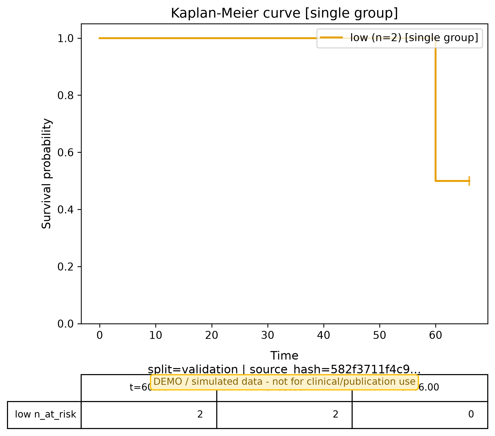
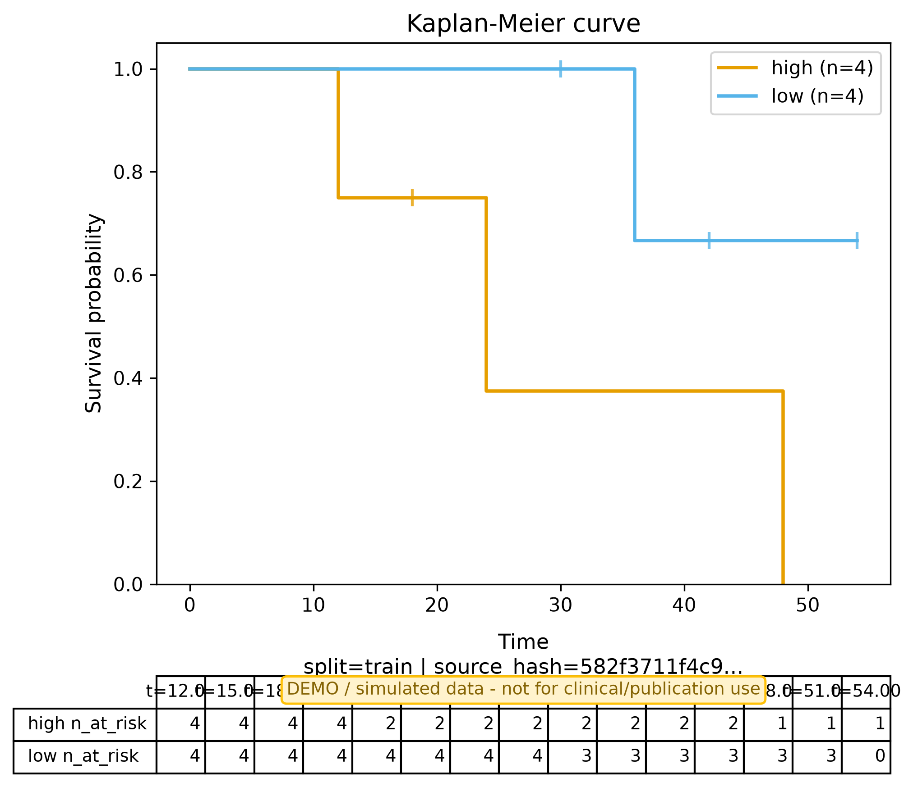

| Field | Value |
|---|---|
| Study Type | prognostic |
| Data Mode | simulated |
| Endpoint | OS |
| Truth Source | simulated_events |
| Censoring Def | 0=censor,1=event |
| Figure | Split | Status | File | Metadata |
|---|---|---|---|---|
| km | validation | generated | km_curve.png | group_counts={'low': 2}, n_events_total=1, at_risk_table={'low': {'times': [0.0, 60.0, 66.0], 'n_at_risk': [2, 2, 0], 'n_events': [1]}}, displayed_risk_table={'times': [60.0, 63.0, 66.0], 'per_group': {'low': {'n_at_risk': [2, 1, 1]}}}, plotted_groups=['low'], is_single_group=True |
| km | train | generated | km_curve_train.png | group_counts={'high': 4, 'low': 4}, n_events_total=4, at_risk_table={'high': {'times': [0.0, 12.0, 24.0, 48.0], 'n_at_risk': [4, 4, 2, 1], 'n_events': [1, 1, 1]}, 'low': {'times': [0.0, 36.0, 54.0], 'n_at_risk': [4, 3, 0], 'n_events': [1]}}, displayed_risk_table={'times': [12.0, 15.0, 18.0, 21.0, 24.0, 27.0, 30.0, 33.0, 36.0, 39.0, 42.0, 45.0, 48.0, 51.0, 54.0], 'per_group': {'high': {'n_at_risk': [4, 3, 3, 2, 2, 1, 1, 1, 1, 1, 1, 1, 1, 0, 0]}, 'low': {'n_at_risk': [4, 4, 4, 4, 4, 4, 4, 3, 3, 2, 2, 1, 1, 1, 1]}}}, plotted_groups=['high', 'low'], is_single_group=False |
| Metric | Value |
|---|---|
| c_index | 1.000 |

km | split=validation | group_counts={'low': 2}, n_events_total=1, at_risk_table={'low': {'times': [0.0, 60.0, 66.0], 'n_at_risk': [2, 2, 0], 'n_events': [1]}}, displayed_risk_table={'times': [60.0, 63.0, 66.0], 'per_group': {'low': {'n_at_risk': [2, 1, 1]}}}, plotted_groups=['low'], is_single_group=True

km | split=train | group_counts={'high': 4, 'low': 4}, n_events_total=4, at_risk_table={'high': {'times': [0.0, 12.0, 24.0, 48.0], 'n_at_risk': [4, 4, 2, 1], 'n_events': [1, 1, 1]}, 'low': {'times': [0.0, 36.0, 54.0], 'n_at_risk': [4, 3, 0], 'n_events': [1]}}, displayed_risk_table={'times': [12.0, 15.0, 18.0, 21.0, 24.0, 27.0, 30.0, 33.0, 36.0, 39.0, 42.0, 45.0, 48.0, 51.0, 54.0], 'per_group': {'high': {'n_at_risk': [4, 3, 3, 2, 2, 1, 1, 1, 1, 1, 1, 1, 1, 0, 0]}, 'low': {'n_at_risk': [4, 4, 4, 4, 4, 4, 4, 3, 3, 2, 2, 1, 1, 1, 1]}}}, plotted_groups=['high', 'low'], is_single_group=False
Displays the just-before counts from the KM risk table.
| Item | Status |
|---|---|
| None | |
| Warning / Missing | |
|---|---|
| None | |
| Test | Result |
|---|---|
| required_fields | PASS |
| input_integrity | PASS |
| sample_flow_non_empty | PASS |
| endpoint_indicator_match | PASS |
| numbers_consistency | PASS |
| censoring_encoding | PASS |
| train_val_isolation | PASS |
| no_fictional_external | PASS |
| no_unsubstantiated_clinical_claims | PASS |
| metric_validity | PASS |